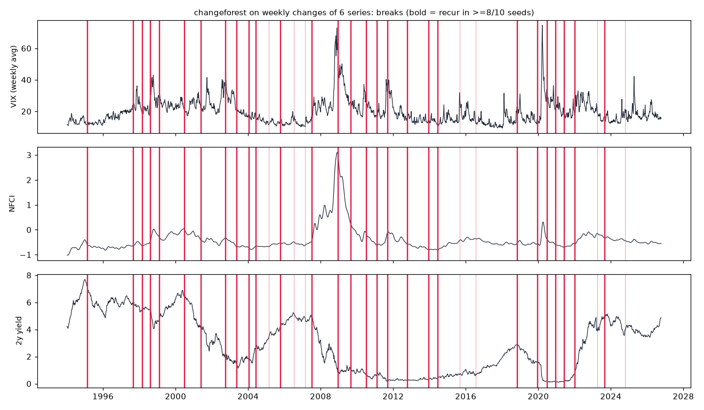
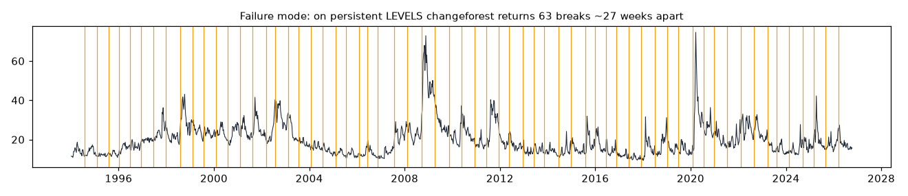

When did the joint behaviour of rates, mortgage rates and financial-stress indices change: their volatility, their co-movement, or both?
Drive FRED files VIXCLS, T10Y2Y, DGS2, MORTGAGE30US, NFCI and STLFSI4 (retrieved 2026-11-10; Drive ids and sha256 in manifest.json). Each is averaged to Friday weeks; then log VIX and the other levels are differenced and z-scored. That leaves n = 1,709 weeks, 1994-01-14 → 2026-10-09. Only aggregates are shown.
methods/changeforest/applications/1/run.py runs changeforest(Z, "random_forest", "bs") with default settings. As a pre-processing check, the same call runs on levels. Robustness covers seeds 0–9, drop-one-series, the first 70% of the sample, Binseg-l2/rbf with the same K, k-means, 5 iid shuffles, 5 VAR(1) simulations, and a prewhitened rerun.


| number | original (scout) | reproduced (clean venv) |
|---|---|---|
| breaks on levels | 63 (median gap 27 wk) | 63 (median gap 27 wk) |
| breaks on changes, default seed | 35 | 35, same dates |
| change-in-mean breaks | 0 | 0 |
| break count across 10 seeds | 32–47 | 32–47 |
| iid-shuffled data (5×) | 0,0,0,0,0 | 0,0,0,0,0 |
| first-70% refit, share recovered | 0.76 | 0.76 |
| overlap with Binseg-rbf / -l2 (±13 wk) | 0.57 / 0.29 | 0.57 / 0.29 |
| k-means label switches vs changeforest breaks | 1,529 vs 35 | 1,529 vs 35 |
| check | result |
|---|---|
| seed-stable breaks (≥ 8/10) | 28 of 35 |
| stationary VAR(1) null on changes (5×, radius 0.957) | 31, 20, 31, 37, 31 breaks: fails |
| stationary VAR(1) null on levels (3×, radius 0.997) | 64, 65, 71: the mechanism behind the levels artifact |
| prewhitened rerun | 22 breaks; 17–22 across seeds; 12 stable: 1995-01, 2000-07, 2003-12, 2007-07, 2008-10, 2009-04, 2012-07, 2019-12, 2020-06, 2021-03, 2022-01, 2023-04 |
| VAR(1) null on the prewhitened data (5×) | 0, 0, 2, 0, 0: passes |
Differencing alone wasn't enough here. The skill now checks persistence and prewhitens automatically (--prewhiten auto), and it always runs the VAR(1) null. An iid shuffle that returns 0 breaks is not evidence the breaks are real.